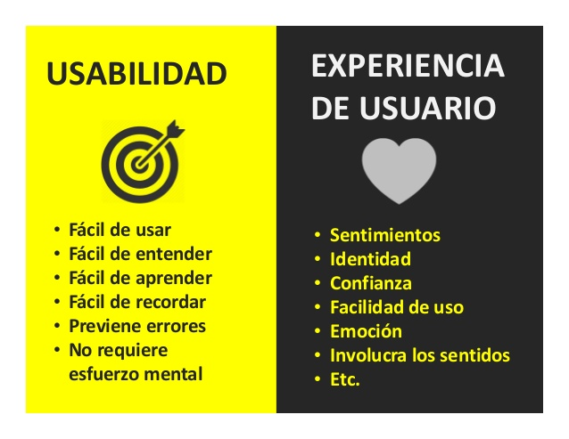

VENTAJAS Y ¿DESVENTAJAS? DE LA USABILIDAD WEB
Ventajas
- Disminución de los costes de ayuda al usuario.
- Comodidad y facilidad de uso para el usuario.
- El aprendizaje del manejo del sitio web es más rápido, y el usuario se familiariza con la página, haciendo mas visibles los productos o servicios.
- Disminución de errores cometidos por el usuario.
- Menos dependencia por parte del soporte técnico de la web.
- La usabilidad permite una mayor rapidez en la realización de tareas y reduce las pérdidas de tiempo.
- Una página que satisface las necesidades de los usuarios, garantiza su clientela y próximas visitas al sitio.
¿Desventajas? Diseñadores vs Desarrolladores
Durante años ha existido una batalla entre la usabilidad web y el diseño web por determinar qué era más importante y a qué se debería darle como prioridad al momento de hacer un proyecto web. Los diseñadores y desarrolladores tienen el problema de que, como también son usuarios de la web, tienden a creer que el resto de usuarios piensan de la misma forma que ellos. Esto no suele ser así. Por lo general, los desarrolladores son personas curiosas y detallistas, a diferencia del usuario promedio, que lo único que busca es aquella información que necesita y luego abandona el sitio. Los diseñadores se inclinan por una página que debería de ser interesante o llamar la atención por cómo se ve, porque eso es lo que a ellos les agrada y los hace sentirse satisfechos. Pero los desarrolladores prefieren los sitios elegantes y complejamente estructurados por su funcionalidad. Uno de los mayores problemas llega cuando ambos, diseñadores y programadores, deben enfrentarse a la eterna problemática sobre lo que quieren los encargados de marketing y es aquí cuando empiezan los problemas con temas de usabilidad. Años atrás, debido a la falta de información y conocimientos sobre usabilidad web, era el diseño quien ganaba la batalla, pero en los últimos años se ha dado la vuelta a la situación. Y se ha dejado bien claro que la usabilidad tiene el mayor peso a la hora del garantizar el éxito de un proyecto web. Podemos tener una página web que al abrirla sea muy moderna y original, pero si nuestro cliente no logra encontrar lo que busca en el primer minuto, se marcha sin miramientos para no regresar. Nuestro objetivo, cuando construimos una página web no es la estructura de la web en sí misma, si no lo que conseguiremos a través de ella: más usuarios. Por ello, es necesario lograr un equilibrio entre un diseño atractivo, sin dejar de lado la usabilidad. Es una tarea que requiere una buena planificación y estructuración, pero es completamente posible.
 VOLVER A LA PÁGINA PRINCIPAL